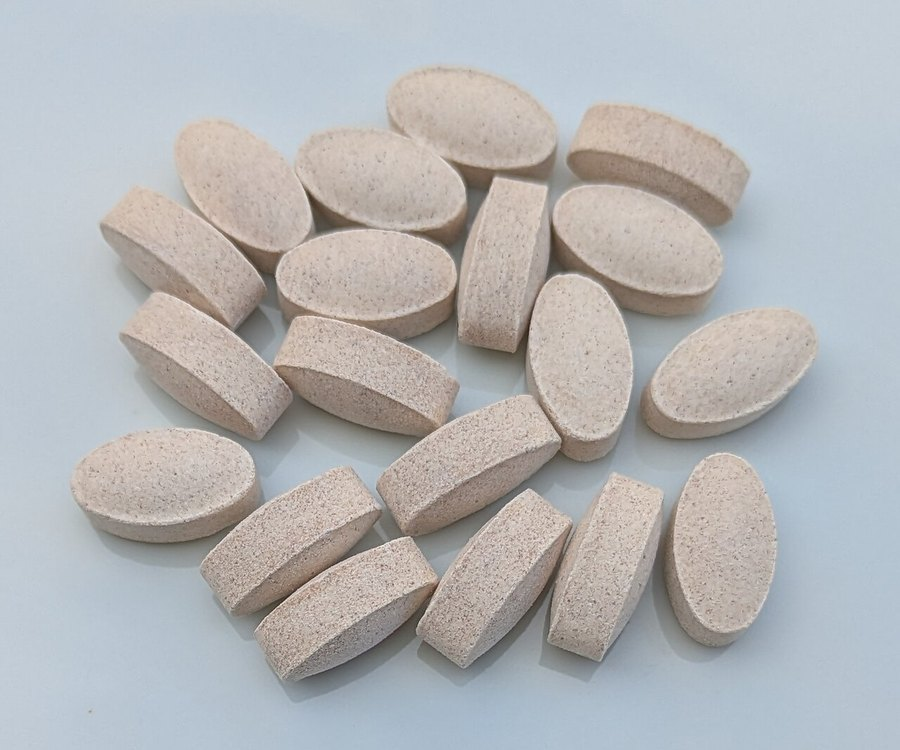

GLP-1 Drugs and Brain Fog: What We Know So Far
Anecdotal reports of fog and early research pointing toward cognitive benefit are both circulating about the same drug class. Here's what's actually established.

Key takeaways
- GLP-1 drugs include semaglutide, liraglutide and tirzepatide, used for diabetes and weight management under brand names like Ozempic, Wegovy and Zepbound.
- "Ozempic brain fog" is mostly a self-reported, anecdotal pattern so far, not something confirmed in controlled cognitive studies.
- Separately, some research links this drug class to lower dementia risk in people with diabetes, an active and still-developing area of study.
- Rapid changes in eating, hydration and blood sugar are plausible fog culprits for people losing weight quickly on these drugs.
- Never adjust or stop a prescribed GLP-1 medication on your own. Bring any new symptom to the prescriber.
Two things are being said about the same class of drugs right now, and they don't obviously fit together. Some patients on semaglutide or similar medications describe feeling mentally foggy. Separately, researchers studying this drug class in people with diabetes have reported associations with lower dementia risk. Both threads are real. Neither is settled.
Here's what's actually known, and what's still speculation dressed up as a trend.
What GLP-1 drugs are
GLP-1 receptor agonists mimic a gut hormone that regulates insulin release, slows stomach emptying and reduces appetite. Semaglutide (Ozempic, Wegovy), liraglutide (Victoza, Saxenda) and tirzepatide (Mounjaro, Zepbound) are the medications people are usually talking about. They were developed for type 2 diabetes, and several are now approved specifically for weight management.
GLP-1 receptors aren't limited to the gut and pancreas. They're also found in the brain, which is part of why researchers are interested in effects beyond appetite and blood sugar, in both directions.
Uptake of these drugs has grown fast, which means the population using them now includes far more people than the original diabetes trials studied, for longer stretches of time and often at higher weight-loss doses. That wider, newer rollout is a big part of why both the anecdotal fog reports and the dementia-risk research are only now generating enough data and enough attention to study properly.
Where the brain fog reports come from
"Ozempic brain fog" has become a common phrase online and in patient forums, describing trouble concentrating, word-finding difficulty or a general mental slowness after starting one of these medications. As far as the current evidence goes, this is a self-reported pattern rather than something demonstrated in controlled cognitive testing.
That doesn't mean the experience isn't real for the people describing it. Self-reported symptoms in medicine often turn out to have a real, identifiable cause once researchers look. It means the specific claim, that the drug itself is degrading cognition, hasn't been established, and there are several more mundane explanations worth ruling out first.
What the research actually shows
Running in the other direction, several observational studies in people with type 2 diabetes have found lower rates of dementia diagnosis among those taking GLP-1 receptor agonists compared with other diabetes medications. Researchers have floated a few possible mechanisms: better blood sugar control, reduced inflammation, and direct effects of GLP-1 receptor activity in the brain that may be protective.
This research is genuinely promising but still early. Observational studies can't rule out that people prescribed these newer drugs differ in other health-relevant ways from those who aren't. Randomized trials specifically testing cognitive outcomes are underway, and the honest summary right now is: an association worth taking seriously, not a proven protective effect you should count on.
It's also worth noting these two research threads have looked at different populations so far. Most of the dementia-risk data comes from people with type 2 diabetes, often taking these drugs at doses lower than the ones used specifically for weight loss. The brain fog reports skew toward people using higher-dose versions for weight management. Treating the two as directly comparable, as if one cancels the other out, overstates what either body of evidence actually covers.
COMPLEX
The memory formula we rate highest in 2026
One formula combined a fully transparent, clinically-dosed label — citicoline, bacopa, phosphatidylserine and B-vitamins — with a 60-day guarantee.
See Today's Price →So what could actually be causing the fog some people report
A few plausible, unglamorous explanations fit the pattern better than a direct drug effect on cognition. Rapid weight loss changes a lot at once: caloric intake drops sharply, and inadequate protein or micronutrient intake during that adjustment can affect energy and concentration.
Vitamin B12 deficiency is a specific one worth flagging. It's already common in adults on certain diabetes medications, and eating a lot less overall raises the odds of falling short on it and on other micronutrients tied to cognitive function. A doctor can check this with a simple blood test, which is a far more useful step than guessing.
Gastrointestinal side effects are common with this drug class, including nausea and reduced appetite, and both can lead to under-eating and dehydration. Dehydration alone measurably affects concentration, a link we cover in our piece on dehydration and brain fog. Blood sugar swings, especially in people also taking insulin or other diabetes medications, are another candidate, and our guide to blood sugar and brain fog covers that mechanism directly.
Sleep changes during a period of significant weight loss and appetite change are common too, and poor sleep is one of the more reliable causes of daytime fog on its own.
What to actually do about it
If you're on a GLP-1 medication and noticing fog, don't stop or adjust the dose yourself. Bring it to whoever prescribed it. There may be a straightforward fix: adjusting how much you're eating, addressing nausea so you can eat and drink normally, checking in on hydration, or reviewing other medications that interact with blood sugar.
A food and symptom log for a couple of weeks can help a prescriber spot patterns faster than a vague "I feel foggy" description. Note what you ate, how much water you drank, and when the fog showed up relative to your dose. That kind of detail turns a fuzzy complaint into something a doctor can actually act on.
Worth mentioning plainly: this is genuinely early, active research on both sides of the question. Anyone telling you with confidence that these drugs definitely cause fog, or definitely protect your brain, is overstating what's currently known.
While that plays out, the basics still apply regardless of what medication you're on. Our guide to improving your memory covers the habits with the strongest general evidence, and for nutritional support alongside them, our 2026 formula review looks at what's worth considering.
Frequently asked questions
Does Ozempic cause brain fog?
This hasn't been established in controlled research. Reports of brain fog on GLP-1 medications are largely self-reported so far. More likely contributors include rapid changes in eating, dehydration from gastrointestinal side effects, and blood sugar swings, all of which are worth discussing with a prescriber rather than assuming the drug itself is the direct cause.
Do GLP-1 drugs protect against dementia?
Some observational studies in people with type 2 diabetes have found lower dementia rates among those taking GLP-1 receptor agonists compared with other diabetes drugs. The research is promising but still early, and randomized trials specifically testing cognitive outcomes are ongoing.
Why would a weight-loss drug affect thinking at all?
GLP-1 receptors exist in the brain as well as the gut and pancreas, so effects beyond appetite and blood sugar are biologically plausible in either direction. Rapid weight loss, reduced eating and gastrointestinal side effects can also independently affect concentration and energy.
Should I stop taking my GLP-1 medication if I feel foggy?
No, not on your own. Talk to whoever prescribed it. There may be an addressable cause, such as inadequate eating, dehydration or a blood sugar issue, and stopping a prescribed medication without medical guidance carries its own risks.
Is this brain fog permanent?
There's no good evidence that it's a lasting effect, since it hasn't even been confirmed as a direct drug effect rather than a downstream consequence of eating and hydration changes. Addressing the underlying cause, with a prescriber's input, is the reasonable next step.
Sorting out fog while managing your health?
Hydration, steady blood sugar and adequate nutrients matter regardless of what medications you're on. See our top-rated memory formulas for 2026 for additional support.
See the Top 5 Memory Formulas →Related: Blood sugar and brain fog · Dehydration and brain fog · How to improve memory · Best memory formulas of 2026